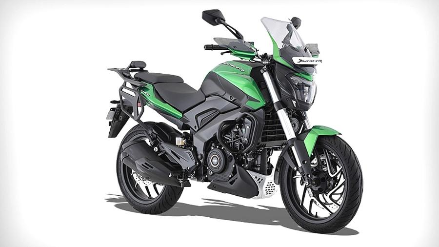

| ROYAL ENFIELD |
BAJAJ |
MOTO GUZZI |
 |
 |
 |
Features:
The first Royal Enfield motorcycle was built in 1901 by The Enfield Cycle Company of Redditch,
Worcestershire, England, which was responsible for the design and original production of
the Royal Enfield Bullet, the longest-lived motorcycle design in history.
|
Features:
Bajaj Auto is the world's third-largest manufacturer of motorcycles and the second-largest in India.
It is the world's largest three-wheeler manufacturer. In December 2020, Bajaj Auto crossed a market
capitalisation of ₹1 trillion (US$13 billion), making it the world's most valuable two-wheeler company.
|
Features:
Moto Guzzi is an Italian motorcycle manufacturer and the oldest European manufacturer in
continuous motorcycle production.Established in 1921 in Mandello del Lario, Italy, the company
is noted for its historic role in Italy's motorcycling manufacture,its prominence worldwide in
motorcycle racing, and industryinnovations—including the first motorcycle centre stand,
wind tunnel and eight-cylinder engine.
|